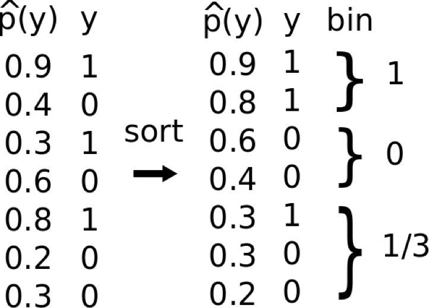
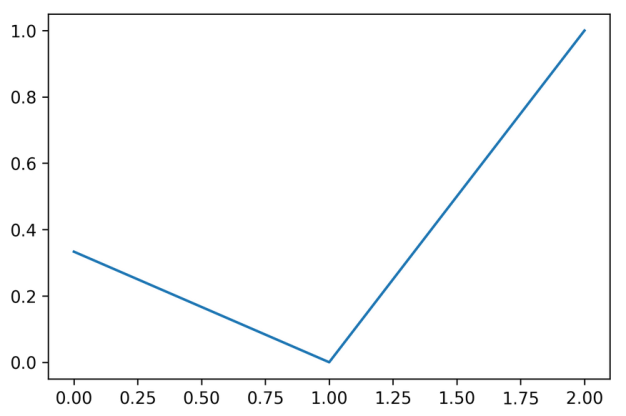
calibration_curve with sklearnUsing subsample of covertype dataset
from sklearn.linear_model import LogisticRegressionCV
print(X_train.shape)
print(np.bincount(y_train))
lr = LogisticRegressionCV().fit(X_train, y_train)
# (52292, 54)
# [19036 33256]
lr.C_
array([ 2.783])
print(lr.predict_proba(X_test)[:10])
print(y_test[:10])
# [[ 0.681 0.319]
# [ 0.049 0.951]
# [ 0.706 0.294]
# [ 0.537 0.463]
# [ 0.819 0.181]
# [ 0. 1. ]
# [ 0.794 0.206]
# [ 0.676 0.324]
# [ 0.727 0.273]
# [ 0.597 0.403]]
# [0 1 0 1 1 1 0 0 0 1]
from sklearn.calibration import calibration_curve
probs = lr.predict_proba(X_test)[:, 1]
prob_true, prob_pred = calibration_curve(y_test, probs, n_bins=5)
print(prob_true)
print(prob_pred)
# [ 0.2 0.303 0.458 0.709 0.934]
# [ 0.138 0.306 0.498 0.701 0.926]
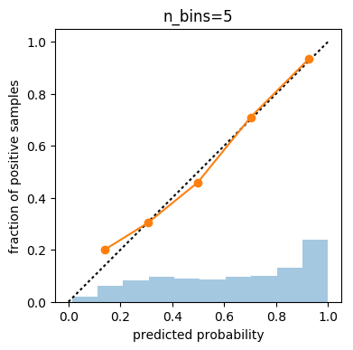
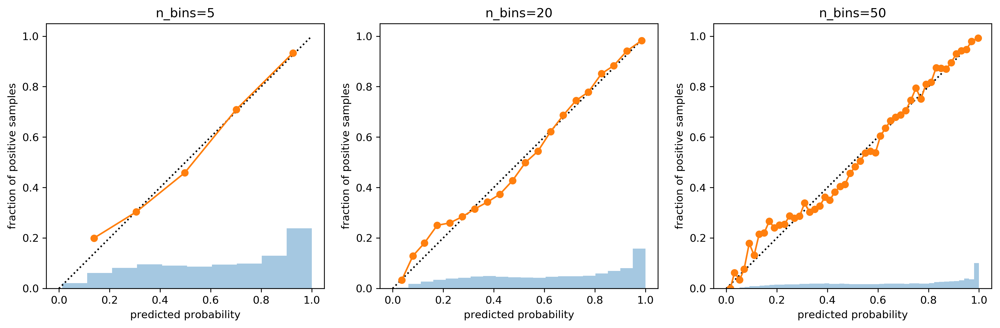
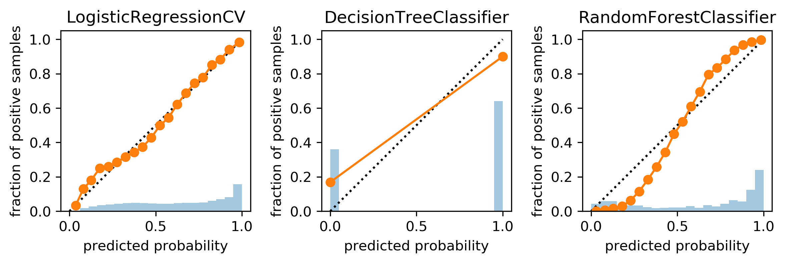
\[ BS = \frac{\sum_{i=1}^{n} (\widehat{p} (y_i)-y_i)^{2}}{n}\]
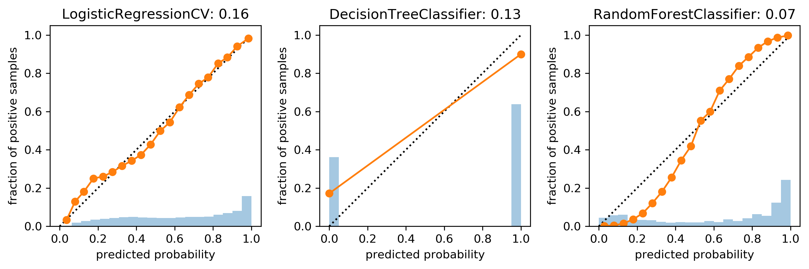
\[ f_{callib}(s(x)) \approx p(y)\]
\[f_{platt} = \frac{1}{1 + exp(-ws(x))}\]
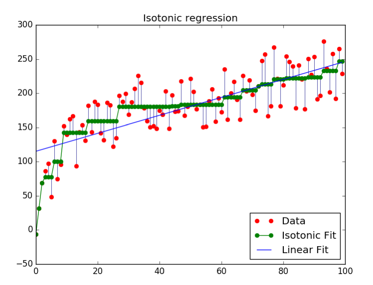
from sklearn.calibration import CalibratedClassifierCV
X_train_sub, X_val, y_train_sub, y_val = \
train_test_split(X_train, y_train,
stratify=y_train, random_state=0)
rf = RandomForestClassifier(n_estimators=100).fit(X_train_sub, y_train_sub)
scores = rf.predict_proba(X_test)[:, 1]
plot_calibration_curve(y_test, scores, n_bins=20)
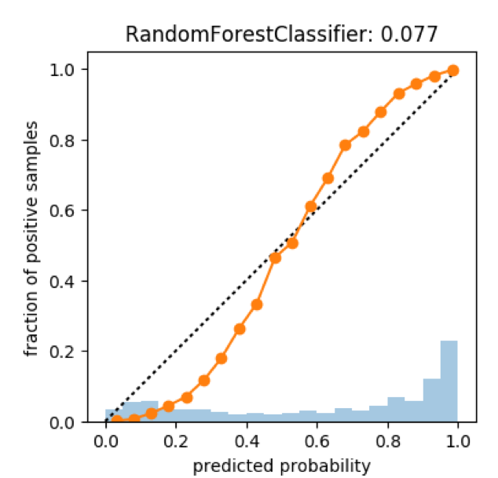
cal_rf = CalibratedClassifierCV(rf, cv="prefit",
method='sigmoid')
cal_rf.fit(X_val, y_val)
scores_sigm = cal_rf.predict_proba(X_test)[:, 1]
cal_rf_iso = CalibratedClassifierCV(rf, cv="prefit",
method='isotonic')
cal_rf_iso.fit(X_val, y_val)
scores_iso = cal_rf_iso.predict_proba(X_test)[:, 1]
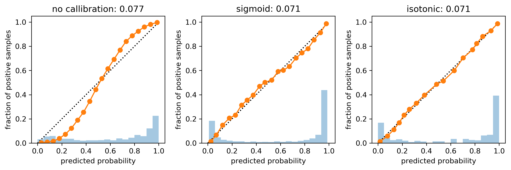
cal_rf_iso_cv = CalibratedClassifierCV(rf, method='isotonic')
cal_rf_iso_cv.fit(X_train, y_train)
scores_iso_cv = cal_rf_iso_cv.predict_proba(X_test)[:, 1]
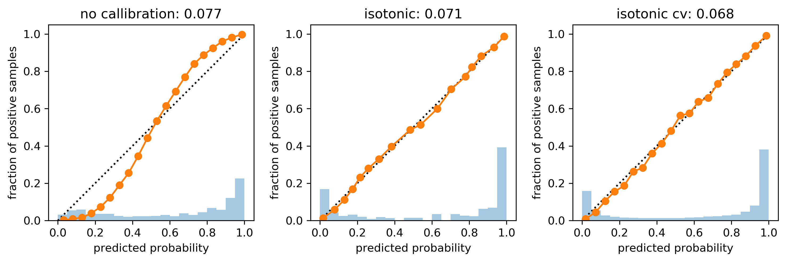
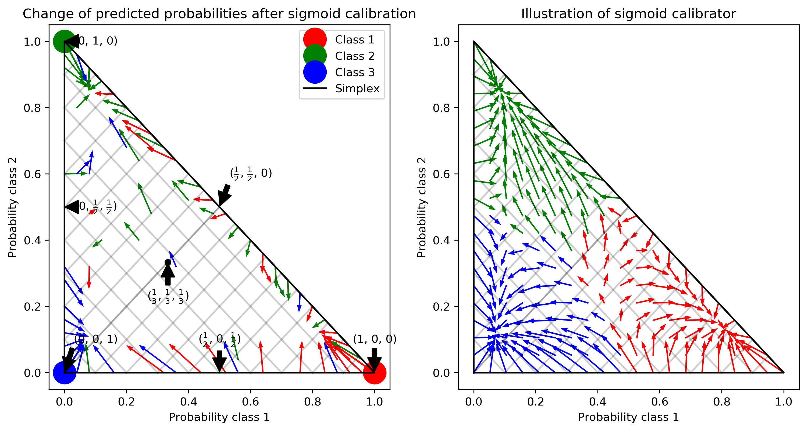
data = load_breast_cancer()
lr = LogisticRegression(solver='lbfgs', max_iter=10000)
X_train, X_test, y_train, y_test = \
train_test_split(data.data, data.target,
stratify=data.target, random_state=0)
lr.fit(X_train, y_train)
y_pred = lr.predict(X_test)
print(classification_report(y_test, y_pred))
precision recall f1-score support
0 0.91 0.92 0.92 53
1 0.96 0.94 0.95 90
accuracy 0.94 143
macro avg 0.93 0.93 0.93 143
weighted avg 0.94 0.94 0.94 143
y_pred = lr.predict_proba(X_test)[:, 1] > .85
print(classification_report(y_test, y_pred))
precision recall f1-score support
0 0.84 1.00 0.91 53
1 1.00 0.89 0.94 90
accuracy 0.93 143
macro avg 0.92 0.94 0.93 143
weighted avg 0.94 0.93 0.93 143
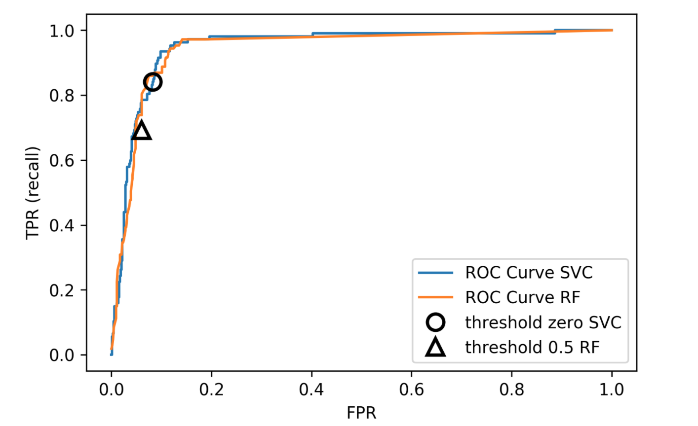
from sklearn.datasets import fetch_openml
data = fetch_openml('mammography', as_frame=True)
X, y = data.data, data.target
print(X.shape)
(11183, 6)
print(y.value_counts())
-1 10923 1 260 Name: class, dtype: int64
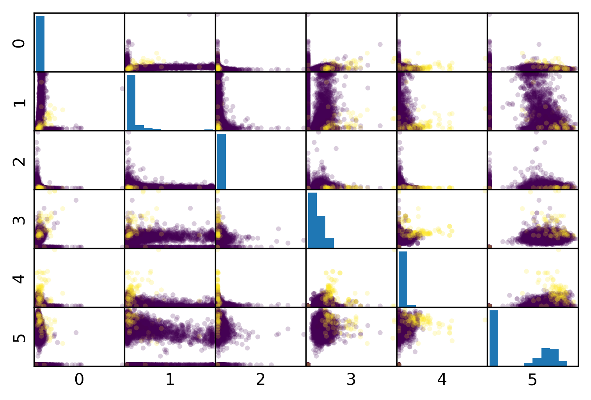
lr = LogisticRegression(solver='lbfgs')
scores = cross_validate(lr, X_train, y_train, cv=10,
scoring=('roc_auc', 'average_precision'))
roc = scores['test_roc_auc'].mean()
avep = scores['test_average_precision'].mean()
print(f"{roc:.3f}, {avep:.3f}")
0.918, 0.631
rf = RandomForestClassifier(n_estimators=100)
scores = cross_validate(rf, X_train, y_train, cv=10,
scoring=('roc_auc', 'average_precision'))
roc = scores['test_roc_auc'].mean()
avep = scores['test_average_precision'].mean()
print(f"{roc:.3f}, {avep:.3f}")
0.943, 0.738
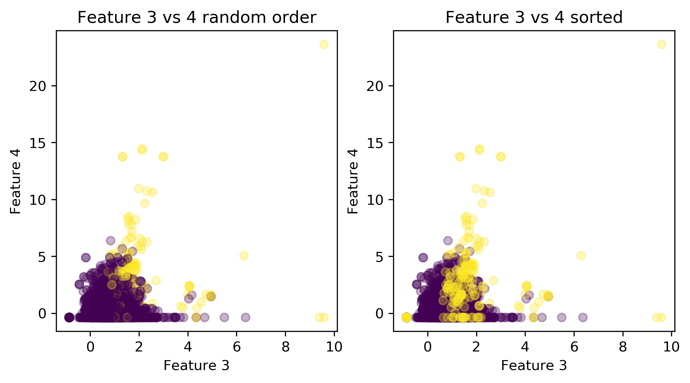
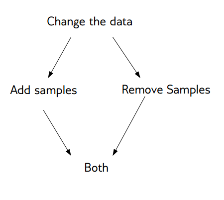
Change the training procedure
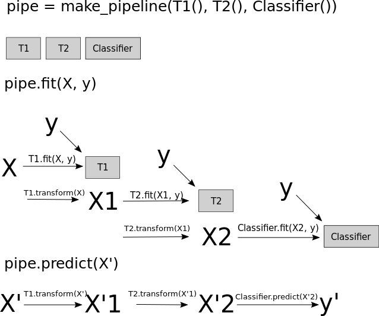
!pip install imbalanced-learn
# or conda install ...
Extends sklearn API
data_resampled, targets_resampled = obj.resample(data, targets)
data_resampled, targets_resampled = \
obj.fit_resample(data, targets)
from imblearn.under_sampling import RandomUnderSampler
rus = RandomUnderSampler(replacement=False)
X_train_subsample, y_train_subsample = \
rus.fit_resample(X_train, y_train)
print(X_train.shape)
print(X_train_subsample.shape)
print(np.bincount(y_train_subsample))
(8387, 6) (392, 6) [196 196]
from imblearn.pipeline import make_pipeline as make_imb_pipeline
undersample_pipe = make_imb_pipeline(
RandomUnderSampler(random_state=57), lr)
scores = cross_validate(undersample_pipe,
X_train, y_train, cv=10,
scoring=('roc_auc', 'average_precision'))
roc = scores['test_roc_auc'].mean()
avep = scores['test_average_precision'].mean()
print(f"{roc:.3f}, {avep:.3f}")
# was 0.918, 0.631 without
0.921, 0.580
undersample_pipe_rf = \
make_imb_pipeline(RandomUnderSampler(random_state=0),
RandomForestClassifier(n_estimators=100))
scores = cross_validate(undersample_pipe_rf,
X_train, y_train, cv=10,
scoring=('roc_auc', 'average_precision'))
roc = scores['test_roc_auc'].mean()
avep = scores['test_average_precision'].mean()
print(f"{roc:.3f}, {avep:.3f}")
# was 0.943, 0.738 without
0.945, 0.594
from imblearn.over_sampling import RandomOverSampler
ros = RandomOverSampler(random_state=0)
X_train_oversample, y_train_oversample = \
ros.fit_resample(X_train, y_train)
print(X_train.shape)
print(X_train_oversample.shape)
print(np.bincount(y_train_oversample))
(8387, 6) (16382, 6) [8191 8191]
oversample_pipe = make_imb_pipeline(
RandomOverSampler(random_state=0), lr)
scores = cross_validate(oversample_pipe,
X_train, y_train, cv=10,
scoring=('roc_auc', 'average_precision'))
roc = scores['test_roc_auc'].mean()
avep = scores['test_average_precision'].mean()
print(f"{roc:.3f}, {avep:.3f}")
# was 0.918, 0.631 without
0.925, 0.570
oversample_pipe_rf = \
make_imb_pipeline(RandomOverSampler(random_state=0),
RandomForestClassifier(n_estimators=100))
scores = cross_validate(oversample_pipe_rf,
X_train, y_train, cv=10,
scoring=('roc_auc', 'average_precision'))
roc = scores['test_roc_auc'].mean()
avep = scores['test_average_precision'].mean()
print(f"{roc:.3f}, {avep:.3f}")
# was 0.943, 0.738 without
0.923, 0.708
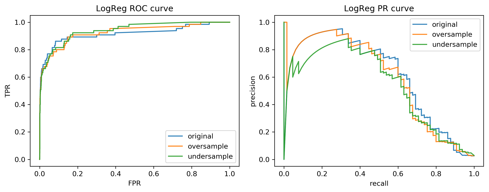
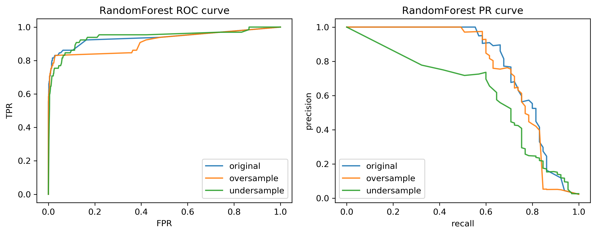
FPR or Precision? \[ \large\text{FPR} = \frac{\text{FP}}{\text{FP}+\text{TN}}\] \[ \large\text{Precision} = \frac{\text{TP}}{\text{TP}+\text{FP}}\]
\[\min_{w \in ℝ^{p}}-C \sum_{i=1}^n\log(\exp(-y_iw^T \textbf{x}_i) + 1) + ||w||_2^2\] \[ \min_{w \in \mathbb{R}^p} -C \sum_{i=1}^n c_{y_i} \log(\exp(-y_i w^T \mathbf{x}_i) + 1) + ||w||^2_2 \] Similar for linear and non-linear SVM
Gini Index: \[H_\text{gini}(X_m) = \sum_{k\in\mathcal{Y}} p_{mk} (1 - p_{mk})\] \[H_\text{gini}(X_m) = \sum_{k\in\mathcal{Y}} c_k p_{mk} (1 - p_{mk})\] Prediction: Weighted vote
lr = LogisticRegression(solver='lbfgs',
class_weight='balanced')
scores = cross_validate(lr, X_train, y_train, cv=10,
scoring=('roc_auc',
'average_precision'))
roc = scores['test_roc_auc'].mean()
avep = scores['test_average_precision'].mean()
print(f"{roc:.3f}, {avep:.3f}")
0.923, 0.564
rf = RandomForestClassifier(n_estimators=100,
class_weight='balanced')
scores = cross_validate(rf, X_train, y_train, cv=10,
scoring=('roc_auc',
'average_precision'))
roc = scores['test_roc_auc'].mean()
avep = scores['test_average_precision'].mean()
print(f"{roc:.3f}, {avep:.3f}")
>>> 0.915, 0.707
from sklearn.tree import DecisionTreeClassifier
tree = DecisionTreeClassifier(max_features='sqrt')
from imblearn.ensemble import BalancedBaggingClassifier
resampled_rf = \
BalancedBaggingClassifier(base_estimator=tree,
n_estimators=100, random_state=0)
scores = cross_validate(resampled_rf, X_train, y_train,
cv=10,
scoring=('roc_auc', 'average_precision'))
roc = scores['test_roc_auc'].mean()
avep = scores['test_average_precision'].mean()
print(f"{roc:.3f}, {avep:.3f}")
0.949, 0.668
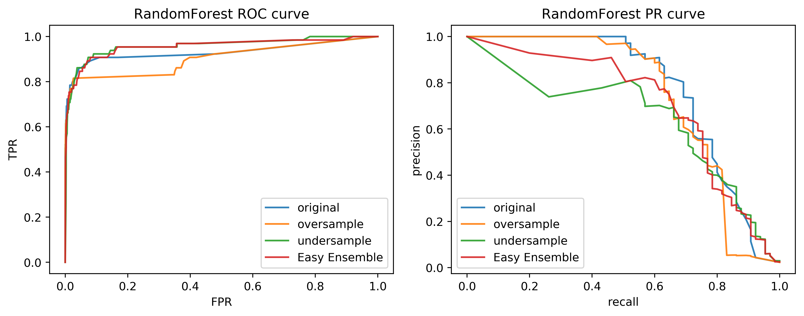
(based on nearest neighbour heuristics from the 70's)
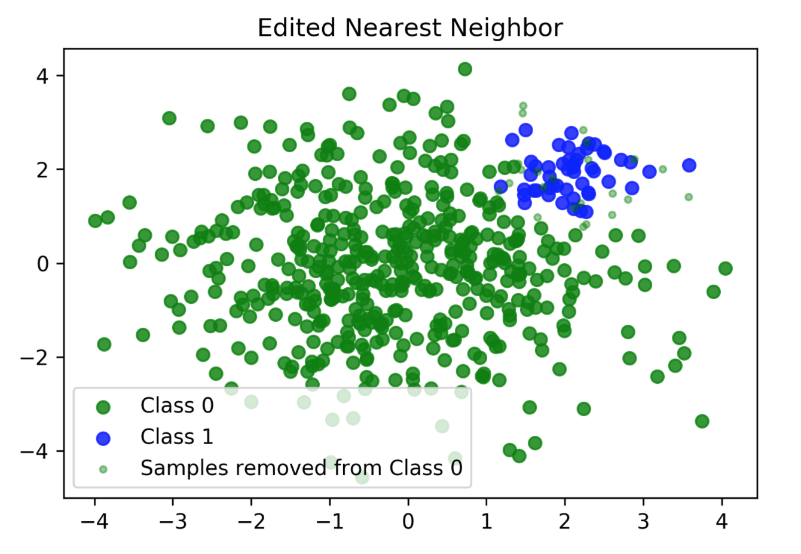
from imblearn.under_sampling import EditedNearestNeighbours
enn = EditedNearestNeighbours(n_neighbors=5)
X_train_enn, y_train_enn = enn.fit_resample(X_train, y_train)
enn_mode = EditedNearestNeighbours(kind_sel="mode",
n_neighbors=5)
X_train_enn_mode, y_train_enn_mode = \
enn_mode.fit_resample(X_train, y_train)
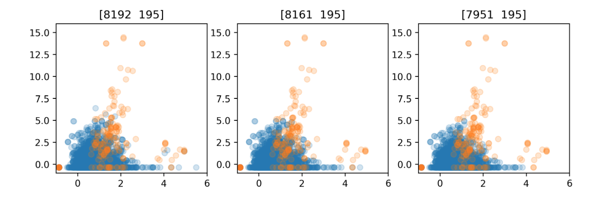
enn_pipe = make_imb_pipeline(EditedNearestNeighbours(n_neighbors=5),
LogisticRegression(solver='lbfgs'))
scores = cross_val_score(enn_pipe, X_train, y_train, cv=10, scoring='roc_auc')
print(f"{np.mean(scores):.3f}")
0.921
enn_pipe_rf = make_imb_pipeline(EditedNearestNeighbours(n_neighbors=5),
RandomForestClassifier(n_estimators=100))
scores = cross_val_score(enn_pipe_rf, X_train, y_train, cv=10, scoring='roc_auc')
print(f"{np.mean(scores):.3f}")
0.941
from imblearn.under_sampling import CondensedNearestNeighbour
cnn = CondensedNearestNeighbour()
X_train_cnn, y_train_cnn = cnn.fit_resample(X_train, y_train)
print(X_train_cnn.shape)
print(np.bincount(y_train_cnn))
(553, 6) [357 196]
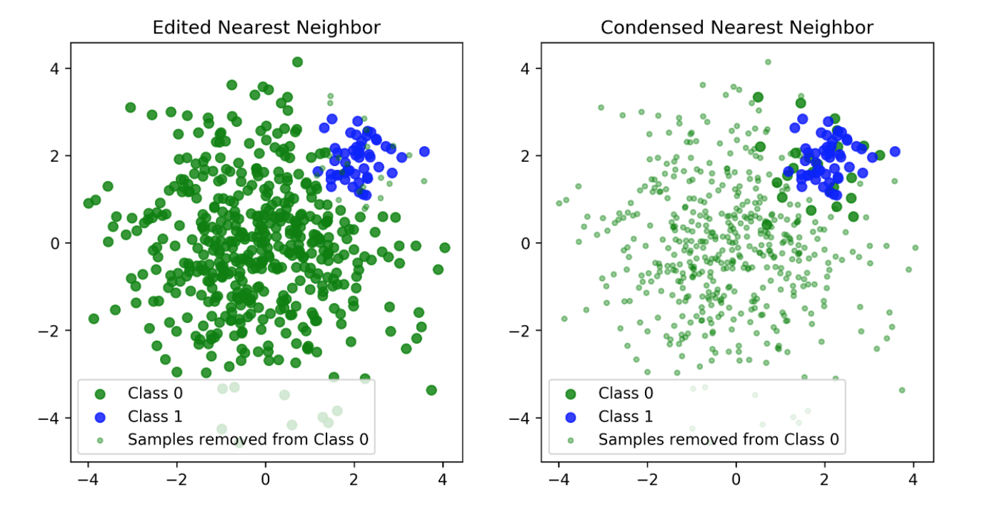
cnn_pipe = make_imb_pipeline(CondensedNearestNeighbour(),
LogisticRegression(solver='lbfgs'))
scores = cross_val_score(cnn_pipe, X_train, y_train, cv=10, scoring='roc_auc')
print(f"{np.mean(scores):.3f}")
0.916
rf = RandomForestClassifier(n_estimators=100, random_state=0)
cnn_pipe = make_imb_pipeline(CondensedNearestNeighbour(), rf)
scores = cross_val_score(cnn_pipe, X_train, y_train, cv=10, scoring='roc_auc')
print(f"{np.mean(scores):.2f}")
0.93
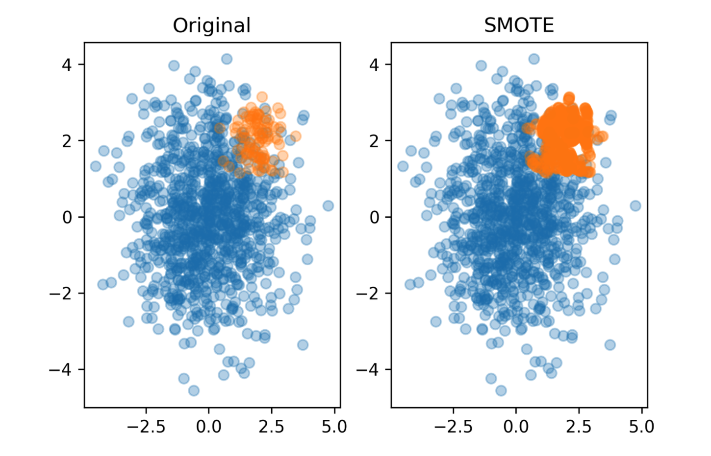
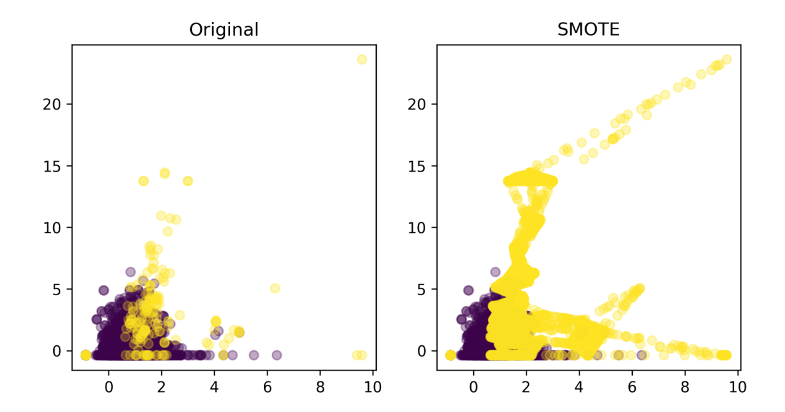
from imblearn.over_sampling import SMOTE
smote_pipe = make_imb_pipeline(SMOTE(),
LogisticRegression(solver='lbfgs'))
scores = cross_val_score(smote_pipe, X_train, y_train,
cv=10, scoring='roc_auc')
print(f"{np.mean(scores):.3f}")
0.922
smote_pipe_rf = \
make_imb_pipeline(SMOTE(),
RandomForestClassifier(n_estimators=100))
scores = cross_val_score(smote_pipe_rf,X_train,y_train,
cv=10, scoring='roc_auc')
print(f"{np.mean(scores):.3f}")
0.943
param_grid = {'smote__k_neighbors': [3, 5, 7, 9, 11, 15, 31]}
search = GridSearchCV(smote_pipe_rf, param_grid,
cv=10, scoring="roc_auc")
search.fit(X_train, y_train)
print(f"{search.score(X_test, y_test):.3f}")
0.959
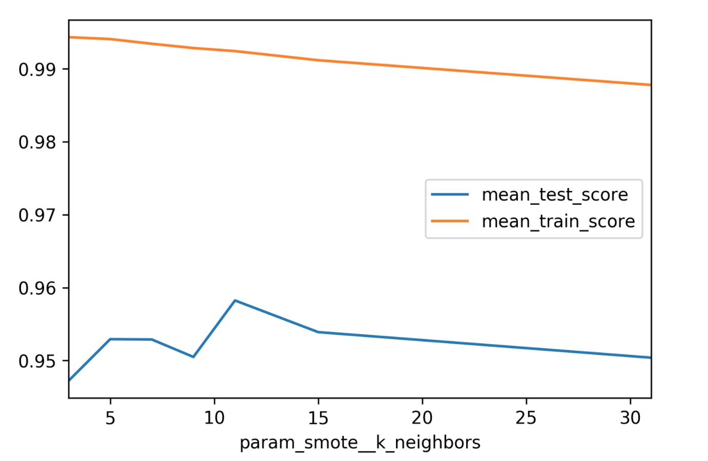
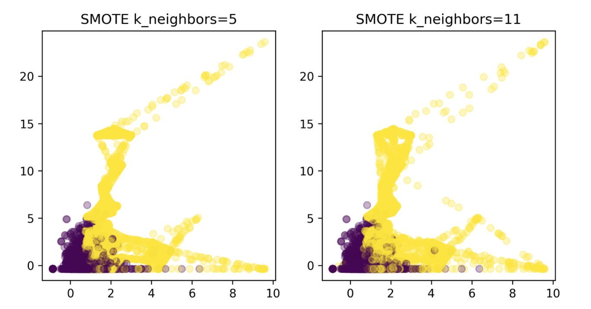